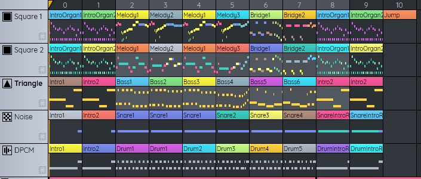
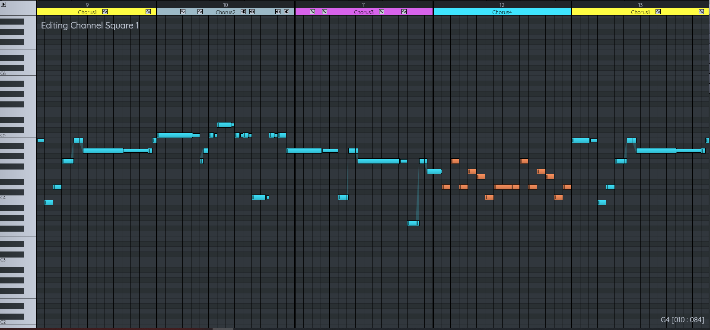
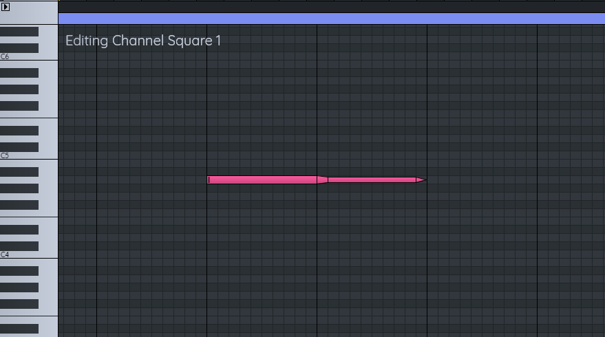
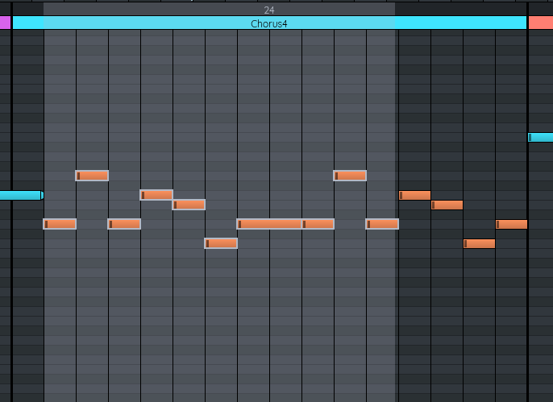
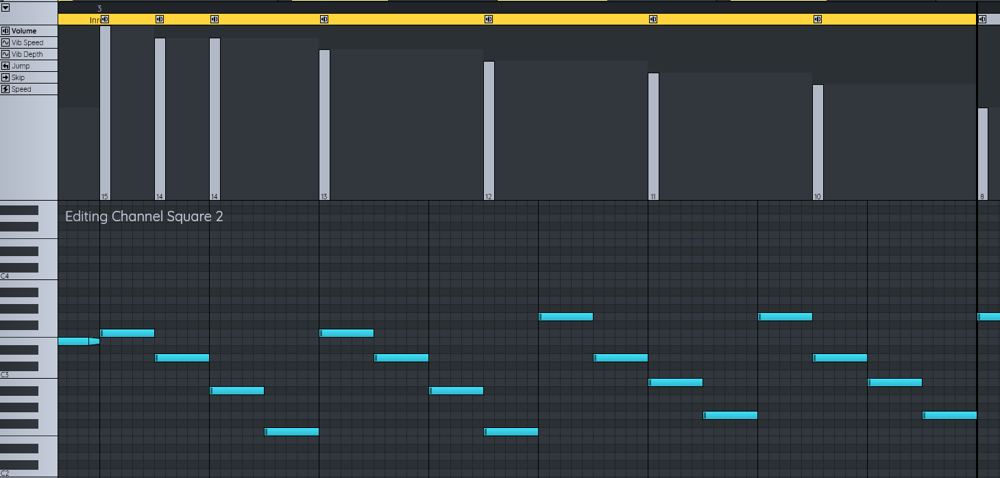

Depending on how you download FamiStudio, you might get scary warnings the first time you try to install or run it.
On Windows, SmartScreen might say "Windows protected your PC". To bypass the warning, simply click "More Info" and then "Run Anyway".
 |
On MacOS, GateKeeper is a bit more agressive. At first it will look like you simply cannot run it and it will give you the option to throw FamiStudio in the recycling bin.
To bypass this warning, open the "Security and Privacy" settings and look for the warning saying that FamiStudio was blocked. Click "Open Anyway" and then you will have the option to launch it.
A FamiStudio project contains:
Songs are made of Patterns, which are on one of the five Channels supported by the NES. Patterns contain Notes which are played by an Instrument (DPCM samples do not require an instrument). Instruments may have some of their attributes (pitch, volume, arpeggio) modulated by Envelopes.
Most of the operations are performed with the mouse. In general:
If you are working on a trackpad, all actions requiring the middle mouse buttons can be done with Alt+Left click.
The UI was designed to be a simple as possible, there are almost no context menus.
The main window has 4 main components:
At any given moment there is always:
The sequencer and piano roll will display the information for the currently selected song. The piano roll will play notes for the currently selected instrument, and output it on the currently selected channel.
Here is a list of useful keyboard shortcuts:
The main toolbar contains your usual stuff: file operation, undo/redo, timecode and play control.
Besides the toolbar, space bar is used to play/pause the song. Ctrl-space plays in pattern loop mode, Shift-space plays in song loop mode.
There are 3 looping modes:
Clicking on the icon save the project, right-clicking is a "save as..." and will prompt you for a new filename.
Only a single song can be exported at a time. You can choose the sample rate, it is recommended to stick to 44.1KHz if you want the soung to be exactly as you hear it in FamiStudio. Lower sample rate might lack high frequencies.
When exporting to WAV, the song will simply play once fully, all jump effects will be ignored.
Export to NSF is very basic for now.
Some limitations worth mentioning:
Note that these size are not printed anywhere and are not related to the size of the *.fms file. Best to simply try and see if it works.
You can export songs to FamiTracker using their Text Export format.
There are some limitations:
Exporting to FamiTone2 works in the same way as the command line tools provided by Shiru.
When exporting file in seperate files, you can specific a name format template for each song. The {project} and {song} macros are available.
When exporting as a single file (non-seperate), you will be prompt to name the output assembly file. If any of the exported songs uses DPCM samples, a .dmc file of the same name will also be outputted.
Clicking the gear icon opens the configuration dialog. This dialog is fairly new and has very few settings at the moment.
The project explorer displays the list of songs and instruments in the current project.
Each instrument (except DPCM samples) has 4 buttons :
If an instrument has no envelope for a particular type, it will appear dimmed.
You can add a song or instrument by pressing the "+" sign, and you can delete a song or instrument by right-clicking on it. Deleting an instrument will delete all notes used by that instrument. Note that there always needs to be at least one song in a project.
Double-clicking on project name (first button in the project explorer) will allow you to change its name, author and copyright information. This information are used when exporting to NSF, for example.
Double-clicking on the a song or instrument will allow you to change its name, color and other attributes. Names must be unique.
Some song properties worth mentioning:
Clicking on an instrument name and dragging it over another instrument will allow you to replace all notes of the first instrument by the second. This is useful prior to deleting an instrument.
Clicking on an envelope button will start editing it in the piano roll. The duty cycle button will cycle between the 4 possible settings: 12.5%, 25%, 50% and inverted 25% since FamiTone2 does not support duty cycle envelopes. For more info on how to edit or delete envelopes, please refer to the piano roll section.
Clicking on an envelope button and dragging it on another instrument will copy that envelope from the first to the second. Note that unlike FamiTracker, envelopes are not explicitly shared between instruments. Identical envelopes will be combined when exporting to FamiTone2, but it is your responsibility to optimize the content and ensure that you limit the number of unique envelopes.
Right-clicking on the icon of an envelope deletes it.
The sequencer is where you organize the high-level structure of the song: which patterns play and when they play. The thumbnails of the patterns in the sequencer are by no mean accurate.
Clicking in the timeline (header) of the sequencer will move the play position.
Clicking a pattern selects it and opens the piano roll for the current channel at the location of the pattern. Double-clicking a pattern allows renaming and changing its color (pattern names need to be unique per channel).
You can select multiple patterns by right-cliking and dragging in the header bar of the Sequencer. To un-select everything, simply press Esc. When multiple patterns are selected, only the color can be edited.

You can select multiple patterns in a rectangular grid, first select a pattern and shift-clicking to a second pattern.
You can add a new pattern by left-clicking on an empty space. Right-clicking deletes.
When one or multiple patterns are selected, dragging them will move them in the timeline. While dragging, holding Ctrl will copy a of the pattern(s). Note that when copying a pattern, it creates an instance of the same pattern, so modifying one instance will modify all of them.
When one or multiple patterns are selected, press CTRL+C (or CTRL+X for cut). Move the selection somewhere else and paste with CTRL+V.
Left-clicking on the icon of a channel (Square, triangle, noise, DPCM) will toggle mute. Right-clicking will toggle solo.
Clicking the tiny square icon next to the channel name will force display it in the piano roll.
Channels that are force displayed and are not the current channel will appear dimmed in the piano roll. This is useful when harmonizing between multiple channels, or editing drum patterns.
The piano roll is where you editing the actual notes of the song, the instrument envelopes, as well as some special effects.
You can also use it to preview instrument by clicking on the keyboard. The currently selected instrument (in the project explorer) will play on the currently selected channel (in the sequencer).
Clicking in the timeline (header) of the piano roll will move the play position.
Clicking a pattern in the sequencer will scroll the piano roll to its location. Left-clicking in the piano roll will add a note of the currently selected instrument. Right-clicking deletes a note.
Using Ctrl+click will add a stop note. Stops notes are displayed as little triangles. Although they are displayed next to the note preceding them, they actually have no pitch or instrument, they simply stop the sound. Stop notes are important because on the NES, a note will play indefinitely unless you tell it to stop.
Using Shift+click will add a release notes. Release notes are shown as making the note thinner and triggers the envelope to jump to the release point. Release envelopes are useful to nicely fade out a note when its release, while preserving other effects like vibrato. There is no point to adding a release note to an instrument that does not have a release envelope.
Hovering the mouse in the piano roll will display the location and note in the toolbar. Hovering over a note will display which instrument it uses.
You can select notes by right-clicking and dragging in the header of the piano roll. Selected notes will appear with a thick silver border. Once notes are selected, then can be moved using the arrows keys (up, down, left and right). Holding CTRL while doing so will make the notes move by larger increments.
Much like the sequencer, selcted notes can be copy (or cut) by pressing CTRL+C (or CTRL+X). You can then move the selection somewhere else and paste the notes with CTRL+V.
If you want to paste notes, without their associated effets or volume track (or vice-versa). You can use a "special paste" by pressing CTRL+SHIFT+V. This will open a popup dialog asking you to choose what you want to paste.
The effect panel can be opened by clicking the little triangle at the top-left of the piano roll. Right now, only a handful of effects are supported:
The volume tracks dictates how loud the current channel should play. This volume is combined with volume envelope by multiplication (50% volume track x 50% envelope volume = 25% total volume). It is much more efficient to use volume envelopes wherever possible and only use volume tracks to control the global volume of the song.
Besides the volume, there also can only be 1 effect for each note. Left-clicking a note that does not currently have an effect will add the currently selected effect. Dragging up and down will change its value. Right-clicking removes the effect.
Clicking on an envelope icon in the project explorer will open the envelope of that instrument in the piano roll. The length of the envelope can be changed by left-clicking (and potentially dragging) in the timeline of the piano roll. Setting the length of an envelope to zero will disable it.
The loop point of an envelope can be set by right-clicking in the timeline. Volume tracks are also allowed to have release envelopes. Release envelopes are played when a release note is encountered and terminates the loop by jumping to the release point. This is useful for fading out notes smoothly. The release point is set by right-dragging from the rightmost side of the envelope.
Clicking on the little icon next to the DPCM samples in the project explorer will open the piano roll in DPCM edition mode.
Clicking anywhere on a note that does not have a DPCM sample associated will prompt you to open a .DMC file. No DMC edition tool is provided, you can use FamiTracker, RJDMC or any other tool. DPCM samples are assumed to have unique names and 2 samples with the same name will be assume to be the same. Double-clicking on an existing sample edits its pitch and toggle loop. Note that only notes between C1 and D6 are allowed to have DPCM samples.